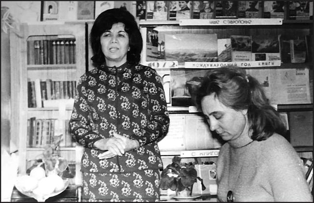
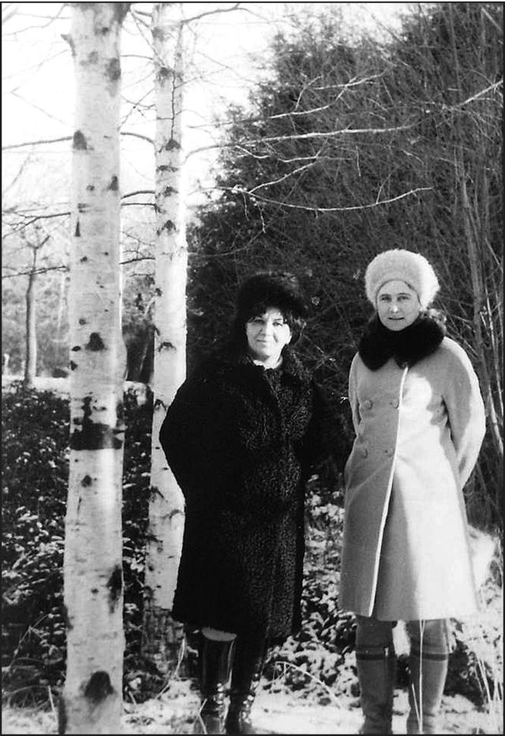

Страницы авторов "Тёмного леса"
Пишите нам! temnyjles@narod.ru
Иран... Сегодня, когда европеец или американец слышит это слово - сразу рождаются негативные ассоциации: резкие антизападные настроения, поддержка радикальных исламских партий и организаций на Ближнем Востоке, жесткий режим теократического государства, почти средневековое законодательство, по которому людей вешают и насмерть забивают камнями за то, что в Европе или в Америке вызвало бы, может быть, словесное осуждение.
Но Иран - это еще и страна с чрезвычайно древней, богатой и самобытной культурой, которая исстари вызывала интерес, как в Европе, так и в России. Многонациональная персидская культура, наверное, навсегда прославлена именами Омара Хайяма, Фирдоуси, Хафиза Ширази, Саади и многих других. Иран с незапамятных времен и до XIX столетия оказывал большое влияние на некоторые районы Восточного Кавказа и Закавказья. Но, оказывается, есть и еще один практически современный нам культурный мостик, который соединил с иранской культурой более близкий для нас регион Кавказских Минеральных Вод. И в роли этого мостика выступила замечательная персидская поэтесса Жале, судьба которой, похожая иногда на действие остросюжетного романа, на несколько десятилетий оказалась связанной с Советским Союзом. Жале много раз бывала в Ессентуках и Кисловодске в период с 1960-х и до 1980-х гг. и очень любила наши курорты.
Родилась Жале в 1921, а по другим сведениям - в 1922 г. в одном из самых древних и красивых городов Ирана - Исфахане. Вот почему она известна еще и как Жале Исфагани, т.е. "Жале Исфаханская". В Советском Союзе ее знали как Бади Жале Абул-гасем. Фамилию Бади она получила, выйдя замуж.
Семья Солтани, в которой Жале родилась, была очень богатой и знатной. Когда будущей поэтессе исполнилось 15 лет, отец хотел выдать ее замуж за двоюродного брата, чтобы состояние богатого рода только приумножалось. Но мать желала своей дочери счастья и спрятала ее в сундуке, когда пришли сваты от нежеланного жениха. Таким образом, это замужество не состоялось.
Душа Жале была с раннего детства поэтичной, как и ее необычное имя, которое переводится как "капельки росы". Так захотела назвать ее мать. Но в документах девочку записали под другим именем - Этель. Так звали медсестру-англичанку, которая ухаживала за отцом Жале в английском госпитале.
По желанию матери и вопреки воле отца, Жале и ее сестра получили хорошее европейское образование в колледже. А после его окончания будущая поэтесса поступила на службу в Национальный банк Ирана, что было просто неслыханным делом для иранской девушки в то время. С юных лет она писала стихи, а в 1944 издала первую книгу стихов. Еще два года спустя Жале Исфагани выступала на конгрессе писателей и поэтов Ирана, где была единственной женщиной. Молодая поэтесса могла бы стать по-настоящему знаменитой у себя на родине, но судьба сложилась иначе. К тому времени она вышла замуж за блистательного офицера-летчика Шамс Аль Дина Бади. Он был человеком коммунистических взглядов и принял участие в борьбе против власти шаха. За это его даже арестовали. А в 1946 или 1947 году супруги эмигрировали из Ирана, так как дальнейшее пребывание в стране было для них опасным. Наиболее близкой им по духу страной оказался Советский Союз. Шамс Аль Дин и Жале поселились в Баку. Много лет спустя поэтесса напишет:
Баку и я.
Как радостно друзей увидеть старых!
Как грустно от потери всех ушедших.
О время, что же ты:
Круг дней усталых
Или блеск молнии,
Мираж лет вешних?
Иль дождевой пузырь,
Что лопнет вскоре?
Или бескрайнее живое море?
Жале выучила азербайджанский, а затем и русский язык, окончила университет, родила в Советском Союзе двоих сыновей - Бежана и Мехрдада. Прожив некоторое время в Баку, супруги Бади перебрались в Москву, где государство предоставило им небольшую квартиру. Шамс Аль Дин стал весьма востребованным специалистом по Ирану, защитил диссертацию по экономике. Жале защитила в МГУ диссертацию по персидской литературе, стала членом Союза Писателей СССР. Она очень гордилась тем, что состояла в нем, не имея при этом советского гражданства. За годы жизни в СССР она издала более 20 томов поэзии, которая была переведена не только на русский, но и на многие другие языки.
В наши края Жале Исфагани впервые приехала в 1960-х гг. Побывав в Ессентуках, поэтесса очень высоко оценила этот курорт, его целебные источники и высококлассную лечебную базу. Поэтому с того времени и почти до отъезда из СССР в 1981 году она еще много раз приезжала сюда. Отдыхала обычно в санатории "Советский шахтер". Но ограничиваться только процедурами в санатории и прогулками к ессентукским источникам и обратно было не в духе талантливой поэтессы. Она общалась и знакомилась с интересными людьми, участвовала в культурной жизни. Самым близким, пожалуй, другом на Кавминводах для Жале Исфагани стала Валентина Александровна Хорунженко, которая тогда заведовала абонементом курортной библиотеки Ессентуков, а впоследствии 27 лет руководила краеведческим музеем. Она с большой теплотой вспоминает свои встречи с персидской поэтессой, и значительная часть информации представленной в этой статье известна мне из рассказов Валентины Александровны. Именно она организовала творческие встречи читателей Ессентукской курортной библиотеки с Жале. Также они ездили в курортную библиотеку Кисловодска, в библиотеку одного из общежитий в Ессентуках. Поэтесса была рада общению с самыми разными читателями. Жале читала стихи, причем, только на своем родном, необычайно мелодичном персидском языке. Валентина Александровна затем знакомила слушателей с русским переводом каждого из стихотворений.
Вообще, отдавая дань Ессентукам как замечательному курорту, наиболее горячо Жале полюбила Кисловодск и его курортный парк. Практически в каждый приезд в Ессентуки, она вместе с Валентиной Александровной ездила в "город солнца и нарзана". А причиной этой особой любви к Кисловодску была тоска по родине. Кисловодские горы - скалистые и покрытые лугами с их пряным запахом горных трав, напоминали Жале родной Иран, пути к которому были для нее закрыты. Трудно себе сейчас представить то, что с родственниками ей приходилось встречаться в какой-либо из стран Западной Европы, потому как она не могла приехать в Иран, а они - в СССР.
Когда Жале Исфагани и Валентина Александровна приезжали в Кисловодск, то уходили далеко в верховья парка, садились на какой-нибудь лужайке или просто на горном склоне, и Жале могла часами рассказывать про свое детство, юность, про жизнь и традиции шахского Ирана, о самом шахе и его семье. Эти рассказы походили на какую-то волшебную восточную сказку...
Благодаря Жале в Кисловодск буквально влюбились и два гостя из далекой Индии, одному из которых поэтесса, можно сказать, спасла жизнь. Как-то раз в ессентукском санатории индийский пациент глотал зонд. Процедура неприятная и, как оказалось, при иных обстоятельствах даже опасная. Индийский гость что-то сделал неправильно и стал задыхаться. Медсестра пыталась ему объяснить, как глотать правильно, но он практически не понимал ничего по-русски и продолжал задыхаться. К счастью, рядом оказалась Жале Исфагани, хорошо говорившая по-английски. Благодаря ей, медсестра смогла объяснить пациенту, что надо делать, и опасность, таким образом, миновала. Индийский турист приехал в Ессентуки с другом, и они оба стали советоваться с Жале по поводу того, куда можно поехать из Ессентуков и что посмотреть. Индийские гости очень рассмешили поэтессу рассказом о том, как они поехали в Минеральные Воды и ничего особенно достопримечательного там не нашли. А на вопрос: почему они поехали в Минеральные Воды, а не, скажем, в Пятигорск или Кисловодск, - ответили, что им, выдавая визу, дальше Кавказских Минеральных Вод ехать не велели. Жале, конечно же, объяснила, что Кисловодск - это тоже Кавказские Минеральные Воды, и они ничего не нарушат, если съездят туда. Впоследствии оба друга стали поклонниками отдыха именно в Кисловодске, куда приезжали затем неоднократно.
В 1979 году в ходе Исламской революции был свергнут последний шахиншах Ирана Мохаммед Реза Пехлеви. Истосковавшийся по родине Шамс Аль Дин Бади решил вернуться полный надежд начать новую жизнь на родной земле. Но режим аятоллы Хомейни относился к коммунистам с еще большей враждебностью, чем шах. Шамс Аль Дину пришлось снова покинуть Иран. Пешком, испытывая большие тяготы в пути. Только два года спустя он оказался в Болгарии, откуда сын Бежан вывез его в Москву, совсем изможденного, а затем - на лечение в Лондон. Там уже несколько лет жил и учился младший сын Шамс Аль Дина Бади и Жале Исфагани - Мехрдад, который еще в Союзе блестяще начал карьеру певца, выступал в составе известной группы "Арсенал" и стал исполнителем двух песен, вошедших в пластинку Давида Тухманова "По волнам моей памяти". Мехрдада в музыкальном мире больше знают под именем Марк.
В 1981 г. тоска по недосягаемой родине заставила Жале, несмотря на все произошедшее с ее мужем, вернуться в Иран. Но это была уже совсем другая страна - с другими ценностями и людьми. Через два года поэтесса уехала в Англию к родным, чтобы уже не вернуться в Иран никогда. Творчество не покидало ее до самой смерти. Жале Исфагани продолжала писать даже в госпитале, когда уже тяжело болела. А 29 ноября 2007 года этой талантливой и самобытной поэтессы не стало. Но осталась в памяти многих людей та магия изысканного и по-восточному утонченного слова, которую дарила эта замечательная женщина своим друзьям, знакомым и довольно широкому кругу читателей. А помнят ее везде, где она жила и бывала: в Москве, в Баку и, конечно, курортной жемчужине России - в регионе Кавказских Минеральных Вод.
 
Жале Исфагани выступает перед читателями. Ессентуки. Фото 1970-х гг. Жале Исфагани и В.А. Хорунженко в Кисловодском парке. Фото 1970-х гг.
Вячеслав Яновский. Неакадемические сочинения